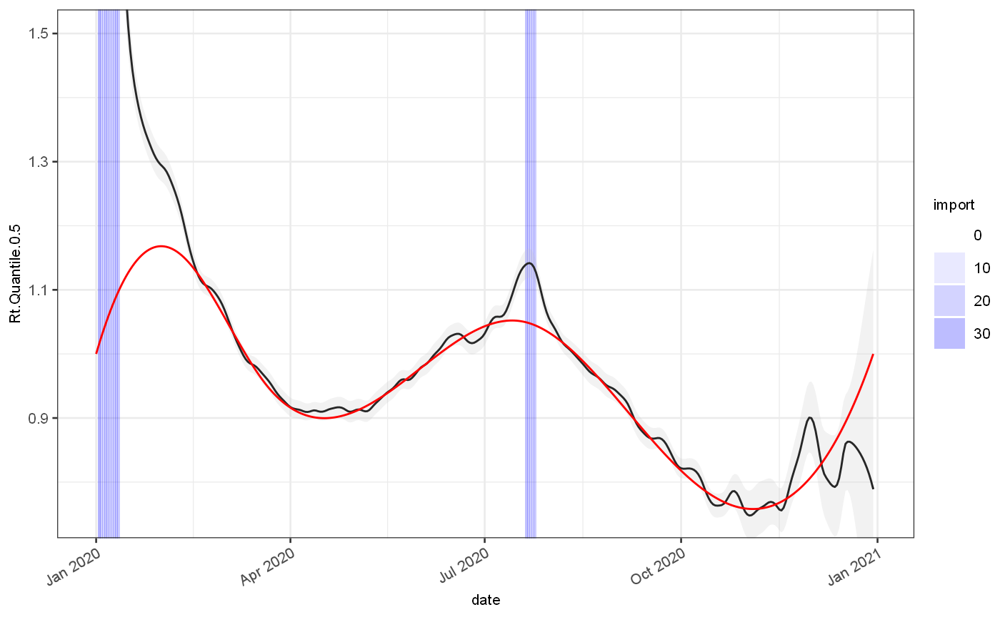
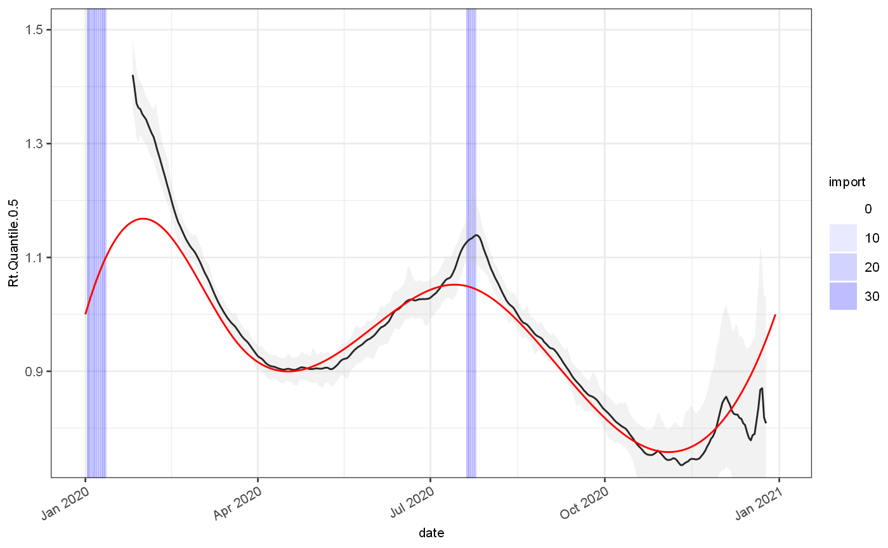

getting-started.Rmdtest = jepidemic::vignetteDataset$ts %>% filter(bootstrap==2, observationDate==max(observationDate)) infProf = jepidemic::vignetteDataset$infectivityProfile ggplot(test)+ geom_bar(mapping=aes(x=date,y=import), stat="identity",fill="blue")+ geom_line(mapping=aes(x=date,y=Est.actual), colour="red")+ geom_point(mapping=aes(x=date,y=value), size=0.1, colour="black")
gr = test %>% locfitGrowthEstimate() ## Registered S3 method overwritten by 'quantmod': ## method from ## as.zoo.data.frame zoo ggplot(gr)+ geom_rect(aes(xmin=date,xmax=date+1,alpha=import),ymin=-Inf,ymax=Inf,fill="blue")+ scale_alpha_continuous(range=c(0,0.3))+ geom_line(aes(x=date,y=Growth.Quantile.0.5), colour="black")+ geom_ribbon(aes(x=date,ymin=Growth.Quantile.0.025,ymax=Growth.Quantile.0.975), fill="grey",alpha=0.2)+ geom_line(aes(x=date,y=Growth.actual), colour="red")+ coord_cartesian(ylim=c(-0.15,0.15))
rt = gr %>% rtFromGrowthRate(infProf) ggplot(rt)+ geom_rect(aes(xmin=date,xmax=date+1,alpha=import),ymin=-Inf,ymax=Inf,fill="blue")+ scale_alpha_continuous(range=c(0,0.3))+ geom_line(aes(x=date,y=Rt.Quantile.0.5), colour="black")+ geom_ribbon(aes(x=date,ymin=Rt.Quantile.0.025,ymax=Rt.Quantile.0.975), fill="grey",alpha=0.2)+ geom_line(aes(x=date,y=Rt.actual), colour="red")+ coord_cartesian(ylim=c(0.75,1.5))
 # Rt via cori method:
estim1 = J$CoriEstimator$new(r0Mean = 1.2,r0SD = 4,maxWindow = 14) estim1$withInfectivityProfileMatrix(infProf$yMatrix) estim1$inMiddleOfTimeseries() estim1$withAdaptivePrior(factor = 1.25) estim1$selectMixtureCombination() estim1$collectMixtureApproximation() cori = estim1$estimateRt(test, dateColName = "date",incidenceColName = "value") %>% mutate(date = Rt.EndDate) ggplot(cori)+ geom_rect(data=test, mapping=aes(xmin=date,xmax=date+1,alpha=import),ymin=-Inf,ymax=Inf,fill="blue")+ scale_alpha_continuous(range=c(0,0.3))+ geom_line(aes(x=date,y=Rt.Quantile.0.5), colour="black")+ geom_ribbon(aes(x=date,ymin=Rt.Quantile.0.025,ymax=Rt.Quantile.0.975), fill="grey",alpha=0.2)+ geom_line(data=test, mapping=aes(x=date,y=Rt.actual), colour="red")+ coord_cartesian(ylim=c(0.75,1.5))
# Bayesian estimators
grEstim = J$GrowthRateEstimator$new(minWindow = 4,maxWindow = 21) # grEstim$priorIncidenceFromPosteriorMean() # grEstim$combineEstimatesWithWeightedMixture() # grEstim$useAllPosteriorEstimates() grEstim$withSaneDefaults() grEstim$withInfectivityProfileMatrix(infProf$yMatrix) out = grEstim$estimateGrowthRateSingle(test, dateColName = "date",incidenceColName = "value") ggplot(out)+ geom_rect(data=test, mapping=aes(xmin=date,xmax=date+1,alpha=import),ymin=-Inf,ymax=Inf,fill="blue")+ scale_alpha_continuous(range=c(0,0.3))+ geom_line(aes(x=date,y=Est.Quantile.0.5), colour="black")+ geom_ribbon(aes(x=date,ymin=Est.Quantile.0.025,ymax=Est.Quantile.0.975), fill="grey",alpha=0.2)+ geom_line(data=test, mapping=aes(x=date,y=Est.actual), colour="red")+ geom_point(data=test, mapping=aes(x=date,y=Est.observed), colour="red",size=0.2) ## Warning: Removed 10 row(s) containing missing values (geom_path).
ggplot(out)+ geom_rect(data=test, mapping=aes(xmin=date,xmax=date+1,alpha=import),ymin=-Inf,ymax=Inf,fill="blue")+ scale_alpha_continuous(range=c(0,0.3))+ geom_line(aes(x=date,y=Rt.Quantile.0.5), colour="black")+ geom_ribbon(aes(x=date,ymin=Rt.Quantile.0.025,ymax=Rt.Quantile.0.975), fill="grey",alpha=0.2)+ geom_line(data=test, mapping=aes(x=date,y=Rt.actual), colour="red")+ coord_cartesian(ylim=c(0.75,1.5)) ## Warning: Removed 30 row(s) containing missing values (geom_path).

ggplot(out)+ geom_rect(data=test, mapping=aes(xmin=date,xmax=date+1,alpha=import),ymin=-Inf,ymax=Inf,fill="blue")+ scale_alpha_continuous(range=c(0,0.3))+ geom_line(aes(x=date,y=Growth.Quantile.0.5), colour="black")+ geom_ribbon(aes(x=date,ymin=Growth.Quantile.0.025,ymax=Growth.Quantile.0.975), fill="grey",alpha=0.2)+ geom_line(data=test, mapping=aes(x=date,y=Growth.actual), colour="red")+ coord_cartesian(ylim=c(-0.15,0.15)) ## Warning: Removed 18 row(s) containing missing values (geom_path).